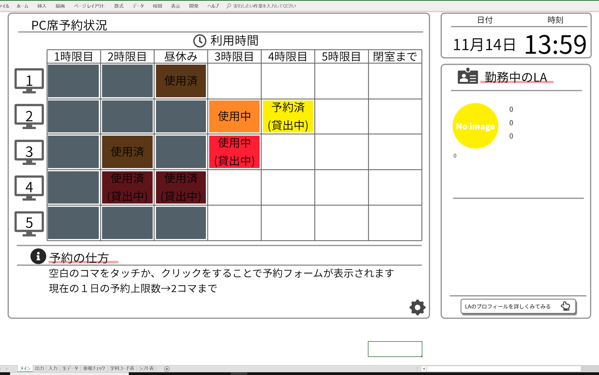
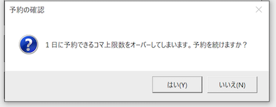
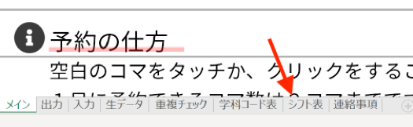
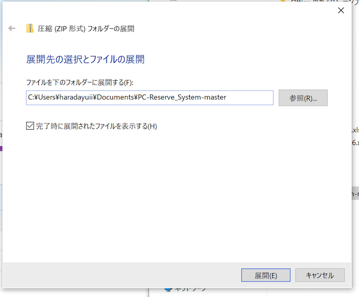
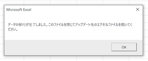
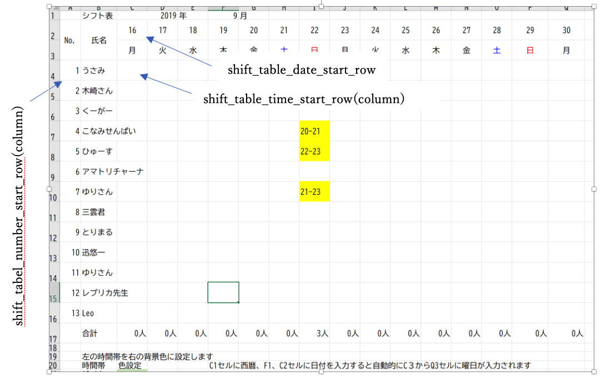
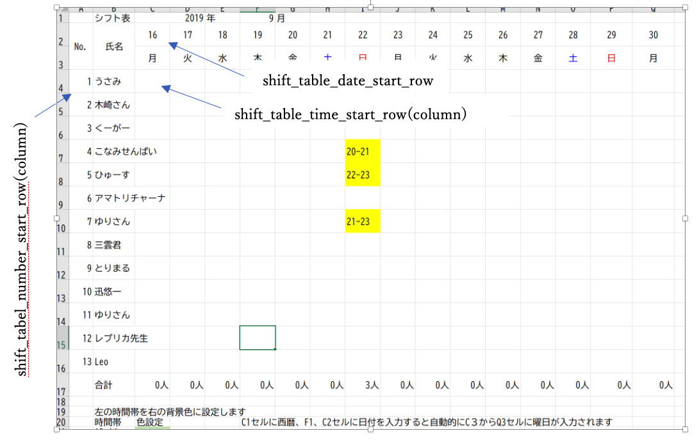
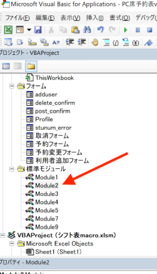
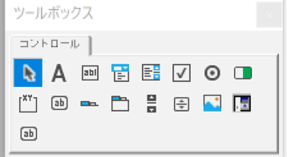
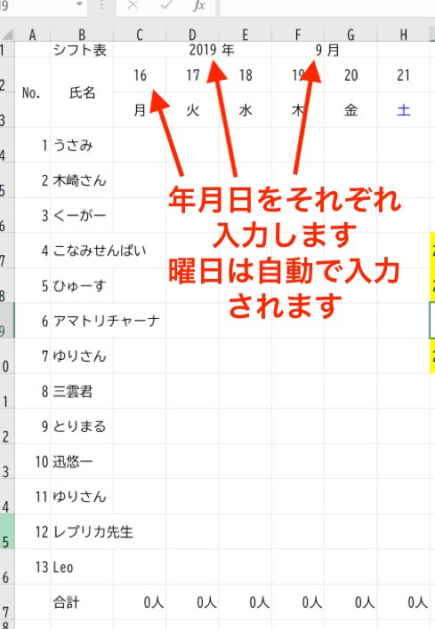

使用する前にすること
このエクセルファイルを運用する前に、準備することがあります。この準備の目的は第三者にこのエクセルファイルを操作させた際に、アクセスされたくないデータにアクセスされたり、内容を改ざんされることを防ぐ目的と、見た目をよくする目的があります。
-
LAコントロールパネルのマクロ再実行を押します。これはなぜかエクセルファイルを開いた直後にはマクロが実行されないからです。もしそれでもなお動かない場合はシートを数回切り替えてください。
- 必要であれば表示倍率を調節してください。
- LAコントロールパネルの表示/非表示オプションから、数式バー、行列番号、ステータスバー、シートタブ、リボンを非表示にします。
- LAコントロールパネルの表示/非表示オプションから、シートの保護を行います。(一般に、すでに保護されているはずですが一応）
- LAコントロールパネルのマスター入力モードをoffに、選択カーソル強制移動をOnにします。
- どこかのセルをクリックするか、スクロールバーを使用してPC席予約表が画面に映るようにします。
-
メインシート左下の歯車をクリックしてスクロールバーを消します。
これで準備は完了です。
予約を取るための基本的な使い方
-
新規予約
-
エクセルファイルを開きメインシートを開きます。
-
予約したい時間帯、席番号のセルを選択する
 -
予約フォームが表示される。
テキストボックス5つのうち１つ以上にに学籍番号7桁(M,D,Sを含む番号も入力可能)か、学生証台帳番号16桁の数字を入力してください。もしくはバーコードをスキャンしてください。

2コマ使用希望にチェックを入れると2コマ連続で予約を取ることができます。HDMIケーブルなどを貸し出し希望にチェックを入れると予約ステータスが変化します。（後述）
必要事項を入力したら、下の登録ボタンをクリックします。
この時、予約が1日の中で一定数以上に達している場合、予約を取るかどうかの確認ダイアログが出ます。（一日に取れるコマの設定の仕方はLAコントロールパネルの一日の上限数参照
いいえをクリックすると予約画面に移動します。
はいをクリックすると、LAを呼んでパスコードを入力するように促されます。（LAコントロールパネル―パスコードの設定、システムのカスタマイズ、パスコードの設定参照
パスコードの入力が正しければ予約され、間違っていれば予約画面に移動します。

-
メインシートで選択した日時、席番号箇所が予約済と表示されます。
現在の時間帯の場合は使用中、現在以降の時間帯の場合には予約済、マスタモード（LAコントロールパネル-マスターモード参照）などで入力した場合などは使用済と表示されます。ケーブル貸し出しにチェックを入れた場合は予約済(貸出中)と表示されます。（11/8 追記ここまで）
>
-
-
既存予約の変更
予約済か、使用中と表示されているセルをクリックすると予約の変更などフォームが表示されます。マスターモードの場合は使用済のセルをクリックしても表示されます。（マスターモードについて参照する）

-
利用者の追加をクリックすると利用者の追加フォームが表示され、新規予約同様に番号を入力することで、予約者の追加を行うことが出来ます。

-
延長をクリックすると、1コマ分延長することが出来ます。
-
予約の取り消しを押すと取り消しフォームが出ます。

LAのパスコードを入力するか、取り消したい予約を行なった人、誰か一人の学籍番号か台帳番号を入力することで予約を取り消すことが出来ます。（LAコントロールパネル―パスコードの設定、システムのカスタマイズ、パスコードの設定参照）
この時、正しく入力していても取り消せない場合があります。これは学籍番号を台帳番号に変換する際に不具合があるからです。具体的には下の画像の黄色の学科の台帳番号は実際にそうであるか不明で仮での変換です。そのため、変換がうまくいかず、取り消しの認証がされません。もしそのような人がいた場合はパスコードを入力して対処してください。
また、できれば正確な台帳番号が手に入れば更新してください。（更新の仕方→GitHubで報告していただければ対応します）

- ケーブル貸し出しボタンをクリックすると、貸し出しのステータスが変化します。
-
利用者の追加をクリックすると利用者の追加フォームが表示され、新規予約同様に番号を入力することで、予約者の追加を行うことが出来ます。
-
メインページの表示する日付の変更

表示されている予約表はK2セルに入力されている日付に従って表示しています。通常はセルの中身は「=today()」としていますが「=today()-1」とすることで昨日の予約表を表示したり、「8/1」などと入力することで、過去や未来の日付の予約表を表示し、その日付の予約をすることが出来ます。
過去の日付を表示した場合は予約はできませんが、未来の日付を表示した場合は全ての時間帯で予約できます。LAコントロールパネル-マスターモードを用いることで過去の予約の編集も可能となります
日付を変更した場合、すぐに予約表が更新されないのでLAコントロールパネルの定期再計算再実行ボタンを2回ほど実行してください。
LAとしての運営のための基本的な使い方
-
生データを編集する
予約をした際に、データは全て生データシートに格納されます。

A列の予約日はyyyymmdd形式で予約した日付、B列の予約時間帯は予約したコマが入力されます。（1→1限目、2→2限目、3→昼休み、4→3限目、5→4限目というように対応しています）
C列の席番号は予約したPC席の番号、D列の予約コードは日付と予約時間帯、席番号を合わせた、データ処理用のコード番号を、E列はケーブルを貸し出しているかどうか、1は貸し出し中、0は貸し出していない場合を表示します。F列からは入力された台帳番号を省略した独自の番号を表示しています。（フォームから学籍番号を入力すると自動的に変換されます）
直接ここに入力することで予約を編集することも可能です。
また学籍番号を入力するセルに文字列を入力するとその入力した文字列が表示されます。機材の不調や貸切など、特殊なステータスが必要な場合に利用することが出来ます。（表からの予約も不可になります）逆に言うとここにMとかDを含む学籍番号を入れるとそれがそのまま表示されてしまうので入力する場合は台帳番号を入力するか、他の数字に置き換えて入力してください。メインシートの右のほうには変換表もあるので参照してください


直接入力した場合はシートソートボタンをクリックするか、予約コードをキーとして昇順で並び替えを行ってください。（match関数の近似値一致で検索するため。軽量化のために行ったため、今後変更の予定は現状ありません） -
現在の予約状況を確認（各予約の人数を確認する）
予約の人数を確認するために、LAコントロールパネルの右側に予約している学生の台帳番号を元にした独自番号がすべて表示される表をつくりました。

現在表示している時間帯コードの右のセルにマクロで現在の時刻を表す数値が入ります。（マクロではpublic変数のon_timeのことです）１は１限目、で一つコマが進むごとにずれていき（時刻とともに自動で更新されます）、８は閉室後以降（表外）を表します。この表はこのセルに入っている時刻での予約状況を示しています。表示している時間帯のセルを直接編集することで自由に時間帯の予約状況を確認することもできます。
（開発用 セルの中の式） =IFERROR(IF(INDEX(生データ!$D:$D,MATCH(OFFSET($D$22,$Z4-1,$AA$3-2),生データ!$D:$D,1))=OFFSET($D$22,$Z4-1,$AA$3-2),VLOOKUP(OFFSET($D$22,$Z4-1,$AA$3-1),生データ!$D:$O,COLUMN(C1),TRUE),""),0)
メインシートのD22周辺に予約コードを生成して出力しておく場所があります。それをmatch＋index関数で参照しますが、今回は時間帯セルに合わせてD22セルから移動して参照してほしいのでoffset関数を用いて、D22セルから移動させます。
Match＋index関数で参照した先が一致した場合（if文Trueの場合）はVLOOKUPの二分探索（True）で生データシートを探索に行きます。この時、列の位置はColumn関数で指定することで右側にコピペしたときに順に参照位置がずれるようにします。一致しなかった場合は“”を吐くように設定。
Iferrorは時間帯セルに８が来たときにN/Aエラーを吐くのでそれを防止するため。 -
LAのプロフィールを設定する
メインシートの右側に表示しているLAのプロフィールを変更したい時は入力シートに入力して出力ボタンを押すことで新しくプロフィールを出力出来ます。

入力シートA列に入力した番号が出力シートのA列に入力されます。なお、ボタンを押して出力すると自動的にA列でソートされます。このA列に入力した番号とシフト表の番号に対応させてメインシートに出力するため、個人の番号を一致させるようにしてください。この番号は0以上の整数にしてください。また0については特殊な動作をします。後述の番号が0のプロフィールについての特殊動作について参照してください。
B列、C列、D列に書いた内容は１つのテキストボックスでまとめて出力されます。
E列を選択するとファイル選択ダイアログが出てくるので、表示させたい画像を選択してください。この時、このプロフィール画像はPC予約表エクセルファイルと同一か、それ以下のフォルダに置くようにしてください。また、E列に何も入力せず出力ボタンを押した場合、PC予約表エクセルファイルと同一フォルダに置かれている"Noimage.png"ファイルの画像が出力されるようになっています。

出力ボタンを押すと自動でトリミングなど行います。この時の設定はシステムのカスタマイズから行えます。
F列に入力された文字はプロフィール下部に表示されます

出力シートを見るとこのように出力されます。出力シートの枠線を表示するとメインシートに出力した時にも枠線が見えるようになります。出力シートを直接編集してもメインシートでの表示に反映されます。出力ボタンを押した時の出力の位置を変えたい場合にはプロフィールのテキストボックスなどのカスタマイズをするを参照してください。番号が0のプロフィールについての特殊動作
番号が０のプロフィールは特殊な扱いを受けます。例えば、シフト表に０の番号が入力されていた場合はそのプロフィールの表示をスキップします。つまり、シフト表に0番号があってもプロフィールの表示はされません。
では、いつ表示されるかというと番号が０のプロフィールが表示されるのは現在の時間帯に勤務している人が誰もいない時です。（≒シフト表に現在の時間帯の入力がない場合）誰も勤務している人がいないときに表示させたいメッセージなどを設定したりすることが可能です。
番号0のプロフィールは入力シートで入力した時にも特別な動作をします。0の番号のプロフィールを入力した時には出力シートの0プロフィールを削除し、新たに入力されたプロフィールを出力します。一方、0プロフィールを入力しなかった時は出力シートの0プロフィールは削除されず、他のプロフィールのみ削除し出力シートを更新します。


LAが勤務していない時に表示させておきたい文言などを登録しておくと便利だと思います。（出力シートは直接編集することも出来ますので自由に出力することが出来ます。
-
シフトを読み込む
別ファイルで作成したシフト表を読み込むことで、メインシートにプロフィールを表示することができます。
-
シフト表シートを選択します。

-
A列には勤務時間の開始時刻、B列には終了時刻、C列にはシフト表の入力時の番号が入力されています。

-
シフト読み込みボタンを押すとファイル選択ダイアログが出ます。読み込みたいシフト表のファイルを選択します。

-
この時、すでに読み込んだ期間のシフトの場合は読み込むかどうかの許可を求めるダイアログが出ます。キャンセルを押すと処理を終わります。OKを押すとすでに入力されている日のシフトを上書きしてシフトを読み込みます。

-
シフトの読み込みは勤務時間終了時間をキーに昇順並び替えで読み込んでいます。手で訂正した場合は並び替えを行なってください。
-
シフト表シートを選択します。
LAコントロールパネル
-
LAコントロールパネルの表示の仕方
メインシートの右側にLAコントロールパネルがあります。これを操作するためにはスクロールバーが必要です。
スクロールバーが表示されていない場合は予約表の右下にある歯車ボタンをクリックするとパスコードを要求されます。

パスコードの入力が完了するとスクロールバーが表示されます。（既に表示されていた場合には非表示になるます。）スクロールバーを操作して予約表の右側のコントロールパネルを表示させます。

-
コントロールパネルの個々のボタンの説明
-
表示／非表示オプション
エクセルの外見について操作することができます。利用者に意図しない操作をさせないためにも、基本的に全ての項目を非表示にし、シートを保護した状態にしてください。 -
マクロ実行ボタン
-
生データソート
生データシートに入力されているデータを予約コードをキーにして昇順でソートします。
こんな時に→予約ずみと表に表示されない時 -
シフトシートソート
シフト表シートを勤務終了時刻をキーとして昇順にソートします。シフトが意図した通りに読み込まれない場合などに用いてください。
-
マクロ再実行
メインシートは1分ごとに再計算を行なっていますが、たまに止まります。（エラーが出た時、マクロの編集をした時など）時刻の更新が一定時間（2分以上）されない場合はシートの再計算が実行されてないので、このボタンを押してください。
こんな時に→日付を変更した場合,予約済と出るのに表に色がつかない現象が恒常的に起こる。 時刻が更新されない、あるいは表示されている時刻が0:00などおかしい
その他大概の不具合がこれで治ると思います。治らなかったらエクセルを再起動してください -
ワークシート再計算
メインシートの再計算を行います。
こんな時に→予約をしたのに表に予約ずみと表示されない時、時刻が更新されない時 -
重複チェックシートリフレッシュ
予約している人のそれぞれのその日の予約数を記録している重複チェックシートを一度クリアして、新たに人数を数え直します。
こんな時に→エラー処理でこれをするように指示された時。予約数絡みでなんかおかしいとき。
-
-
入力モード切り替え
-
マスター入力モード
当日の過ぎた時間帯でも予約・予約の変更取り消しなどができるようになります。パスコードの入力が必要です
こんな時に→入力データを修正したい、過去のデータを入力したい -
選択カーソル強制移動
選択カーソルを強制的に移動するように設定できます。運用の際にはonにすることで、繰り返し同じセルをクリックすることが可能になります。パスコードの入力が必要です。編集作業などをする際には邪魔になるのでオフにすると便利です。
-
-
勤務中のシフト番号
勤務中のLAの番号を表示します。この番号を参照してプロフィールを表示しています。
基本的にここに表示される番号は５つまでです。表示するプロフィールの数は別途設定できます。３．システムのカスタマイズのメインシートの各セルの位置を変更するを参照してください。
プロフィール表示の細かい仕様はプロフィール表示設定を参照してください。-
シフト追加
新しく現在の時刻から勤務する人を追加することができます。

勤務する人、勤務する時間を選択し登録ボタンを押すと、現在の時刻から選択した時間までのシフトが追加されます。この時、時間の選択は任意です。選択しなかった場合自動的に2時間となります。
登録したあとすぐにシフト番号が表に表示されないことがあります。その時はマクロ再実行ボタンを押してください。 -
シフト編集
現在勤務しているシフトを削除、勤務終了時刻を現在の時刻に設定することができます。
-
-
予約制限
-
一日の上限数
左のセルの数字を変更することで一日の予約可能数を変更することができます。文字列を入力すると36と認識され、「予約制限はありません」と表示されます。
-
予約制限
左のオンオフの切り替えを行うことで予約の制限を行うことができます。オンにすると現在のコマのみ予約可能となり、先のコマの予約ができなくなります。（すでに予約されているコマは編集可能）
またオンにすると予約の仕方に予約制限中である旨が表示されます
オンにしてるときに先のコマを予約しようとすると、予約制限中であることを知らせるウィンドウを出すようにしました。また、延長、２コマ連続予約にも制限がかかるようにしました。
-
-
開発
-
VBEを開く
マクロの編集を直接できるVisualBasicEditorを開くことができます。システムのカスタマイズでパスコードを設定したり、プロフィールのデザインを設定したりできます。
-
パスコードの追加/削除
現在PC予約表でパスコードには2種類あります。１つ目はVBE上の標準モジュールにて"passcord"という定数として設定されているもの。便宜上、これを定数パスコードと名付けます。２つ目は登録した人の学籍番号、あるいは学生証に表記されている台帳番号をパスコードとして利用できます。このボタンからその登録を行うことができます。学籍番号と台帳番号は共通の独自の番号に変換されるので、どちらかを登録すると入力画面では両方の入力に対応します。
- ボタンを押すとパスコードを要求されます。これは第三者から自由にパスコードを追加されたりしないようにするためです。定数パスコードかすでに登録した人の学籍番号などを入力してください。
-
登録する人の学籍番号か台帳番号を入力し、OKボタンを押すと、新規のパスコードを登録することができます。
すでに登録した人の学籍番号か台帳番号を入力すると、その番号を削除することができます。
-
エクセルファイルのアップデート
PC予約表のマクロはオンラインストレージであるgithub上で更新されています。githubでの操作を含めてアップデートの仕方を説明します。-
githubURLhttps://github.com/Yu0727Harada/xlAresにアクセスします。
赤丸で記した緑色のclone or downloadを押します。

-
downloadするためのボタンが出てくるのでdownload Zipをクリックします。

ダウンロードが始めるので好きな所に保存します。 -
保存した所に移動してダウンロードしたファイルを選択し、右クリックから全てを展開を選択します。

好きな所に展開をします

展開したフォルダの中にbinという名前のフォルダがあります。色々ファイルが入っていますが、大事なのはこの中に入っているPC席予約表のエクセルファイルとせいぜいnoimage.pngファイルです。noimage.pngファイルについてはLAのプロフィールを設定するを参照してください。
PC席予約表のエクセルファイルを好きな場所に移動します。 -
移行元の予約表エクセルファイルを用意します。この時、移行元と移行先のエクセルファイルの名前は異なるものにしてください。以降元のエクセルファイルを開きます。
LAコントロールパネルを表示し、エクセルファイルのアップデートボタンを押します。ファイルダイアログが出るので先ほどダウンロードしたエクセルファイルを選びます。
選ぶと画面がカチカチしたりしますが、この間にデータの移行を行なっています。データの移行が終わるとダイアログが出ます。

これでデータの移行は完了です。
このパスコードには定数パスコードは含まれません。定数パスコートを引き継ぐにはVBEエディターから定数パスコードを設定し、github上のデータをアップデートする必要があります。 -
githubURLhttps://github.com/Yu0727Harada/xlAresにアクセスします。
-
定期保存のON/OFF
エクセルのファイルは1分ごとに保存されています。しかし、編集を行なっている時などは保存が入ると重くなってしまいます。そのため、定期的に保存するかどうかをこのボタンで選択することが出来ます。
-
基本的に挙動がおかしい時は、定期再計算再実行とメインシートセッティングと生データソートをガチャ押しすれば治りますので、よく分からない時はガチャ押ししてください。
また、エラーによってはこのボタンを押してくださいと出るので、その時に、指定のボタンを押してください。押してリカバリーの効かない操作のボタンはありませんので、押すことをためらう必要はありません。 -
システムのカスタマイズ
-
定数パスコードの設定
予約表の操作には利用者に操作されては困りそうな操作にはパスコードの入力を求めるようにしています。パスコードについてはパスコードの追加／削除も参考にしてください。定数パスコードはマクロを変更することでいつでも変更ができます。
-
VisualBasicEditorを開き、標準モジュールフォルダのModule1を選択します。

このウィンドウがない場合は表示→プロジェクトエクスプローラーを選択することで表示されます.

-
module1が表示されます。

「Public const passcord as string = 」というのがあります。この＝の次の数字がパスコードです。この数字を変えることでパスコードを変更することができます。
-
-
メインシートの各セルの位置を変更する
パスコードと、モジュールを開くとこまでは同じです。パスコードの下に書いてある文字を変更することで位置を変更することができます。

各変数の表しているセルの位置を図にしめしてあります。Columnの綴りが間違っている箇所がありますので、誰か直してください。他にもタイポしてたりするのですみません。メインシートのデザインを変更した際などに数字を調整してください。

-
シフト表の各セルの位置を変更する
別ファイルのシフト表作成ファイルのセルの位置を変更した場合などは3.システムのカスタマイズ-メインシートの各セルの位置を変更するを参照して、以下の数字変更してください。各変数の表すセルの位置は図に示しました。
 

-
プロフィールのテキストボックスなどのカスタマイズをする
VisualBasicの開き方を参照してvisualBasicを開きます。Module2を開きます

Module2の中にテキストボックスを出力するコードがあります。一番上の方にあるT,L,W,Hと書かれているところが名前と所属をテキストボックスの出力をコントロールする部分です。

少し下の行に書かれているT2、L2、W2、H2という変数を先ほどの要領で調整することで、コメント部分の出力位置を変更できます。

さらに下の行には画像の出力位置を調整する変数があります。先ほどの要領でslection.top,selection.left,selection.widthを変更することで出力位置を変更できます。

msoshapeOvalは楕円を指定しています.他の形にも出来ます（ググって）

-
LAプロフィールユーザーフォームの設定
LAの詳しいプロフィールを閲覧できるユーザーフォームを設定することができます。VisualBasicを開き、フォームフォルダのProfileをクリックします。
プロフィール画面が表示され、編集することができます。ツールボックスを使用することで画像やテキストを配置することができます。


ツールボックスの説明です。（使いそうなものの最低限しかしませんので、あとはGoogle先生に聞いてください）
- 矢印は選択ツールで、オブジェクト（画像とかテキストとか）を選択しプロパティウィンドウ（後述）でオブジェクトのプロパティ（表示するテキストとか、フォントとか画像パスとか）を編集することができます。
- Aのアイコンは選択するとラベル（ワード的に言えばテキストボックス）をユーザーフォーム上でドラックすることで作成できます。
- 真ん中の行のルーズリーフのインデックスのようなアイコンをクリックしてドラッグすると、タブで選択できるエリアを作成することができます。
- 右下の青い波立ってる的な画像アイコンを選択すると画像エリアをユーザーフォーム上でドラッグすることで作成できます。

表示されていない場合はメニューバーの表示→プロパティウィンドウで表示できます。


選択ツールでオブジェクトを選択、プロパティを編集することで色々いじれます。1から10まで解説するのはしませんがある程度直感でいじれます。ある程度書いておきます。
- BackColor オブジェクトの背景色を設定します
- BackStyle 背景の有無の選択。0(transparent)→透明 1(opaque)→BackColorで選択した色を表示
- BorderColor オブジェクトの境界線（輪郭線）の色を設定します。
- BorderStyle 境界線の有無の設定
- Caption ラベルに表示するテキストの設定します
- Enabled オブジェクトが実際にエクセルのデータで表示されるかを設定します
- Font フォントの設定
- ForeColor 文字の色
- Height オブジェクトの高さ
- Left オブジェクトの横の長さ
- Specialeffect オブジェクトを立体的に見せたりできる
- TextAlign テキストの中央揃え、左揃えなどの設定
- Picture 表示する画像をファイルダイアログから選べます
シフトの作成
別ファイルのシフト表作成ファイルを用いることでシフトを作成することができます。
-
日付の入力
作成するシフトの期間を入力します。
シフト表の下には様々な操作を行うボタンが用意されています。
-
シフト表リセットボタン
シフト表の勤務日時が入力されているエリアの文字と背景色をリセットします。リセットする前には確認ダイアログが出ます。
-
シフト時間帯取得
入力されているシフトの勤務の要素をB21セル以下に抽出します。すでにB21以下セルに入力されている場合は上書きせず、無かった場合は要素を追加します。

-
セルの色設定
B21セル以下に入力された時間帯の右のセル背景色をシフト表に反映します。B21セル以下の色設定は以前のシフト表ファイルからコピペして貼った場合もきちんと反映されます。
エラー処理＆困った時の処理リスト
-
バグの報告
予約表のマクロはGitHubにアップロードしています。
URL https://github.com/Yu0727Harada/xlAres
バグ報告、プルリクエストなどしていただいてもちろんかまいませんので使える人はそちらからどうぞ。
予約表を操作しているとエラーにであうことがあると思います。その時の対処法を書いていきます。エラーには2種類あります。１つ目は予約表固有エラー、２つ目はVBAエラーです。 -
予約表固有エラー
マクロ作成者がすでにエラーを認識、原因を解明しているため、エラーが発生した際にメッセージボックスにエラー番号が記載されています。以下に各エラー番号ごとの対処法がありますで、これを参考に対処してください。-
:エラー002
予約表ファイルはマクロで自動的に保護されるようになっています。それによりセルの背景色を変更する際に、変更できずにエラーが出ることがあります。特に初めてのPCで開いた際に起こりますが一度設定すると発生しなくなります。
解決策 校閲のシートの保護の解除をクリック。校閲がない場合（リボンが表示されていない時）にはコントロールパネルの表示/非表示設定からリボンを表示を押します。

シートの保護に変わるのでもう一度クリック

セルの書式設定のチェックボックスにチェックを入れてOKボタンを押します。

-
:エラー番号101
通常起こりえないエラーです。原因としてはきちんと生データがソートされていない、ソートされていない状態で予約などを行なったために予約データが重複していると考えられます。まずはLAコントロールパネルで生データをソートしてください。それでもエラーが出る場合は、生データシートを直接見て、同じ時間帯、席番号が被っているデータを削除してください。
-
：エラー番号102
予約を削除する際にその人の1日の予約数を減少させようとしたら、その人の学籍番号が見つからなかった場合のエラーです。原因としては重複チェックシートや生データを直接編集した際に起こると思います。特に影響はないですが、LAコントロールパネルで重複チェックシートリフレッシュを行うとよいと思います。
-
：エラー番号103
予約を削除する際に生データを検索したら予約が見つからなかった場合です。通常ありえません。生データシートの予約コードが何らかの要因で直接編集された、あるいは予約表の数式が変更されたことも考えられます。バックアップの予約表の数式をコピーして貼り付けるなどしてください。
-
：エラー番号２０１
シフト表に読み込まれている番号が出力シートのプロフィールシートに存在しない場合のエラーです。エラーが出た場合はその番号のプロフィール表示をスキップし、モジュール１のshift_profile_countで指定した数までプロフィールの表示を続けます。

例）その時のシフトが３、１０、１５番号で１０番のプロフィールがなかった場合、３と１５番のプロフィールを表示します。
また、更新のたびにエラーを吐きますので、プロフィール番号が間違えた場合などはそこを修正。そもそもプロフィールを用意していない場合などはシフト表の番号を０に設定しましょう。０はエラーなしで表示をスキップします。
例）シフトを３、０、１５に設定するとエラーなしで３と１５番のプロフィールを表示します。
-
-
VBAエラー
作成者が予期していない、あるいは予期していても防ぐことが難しい場合は発生します。こんな感じのが出てきます。

終了を押して大概問題ありませんが、出来ればデバックボタンを押して、どの行でエラーが出たかスクショして報告してくれると開発に役立ちます。 -
予約表に予約済と表示されない,予約表の背景色が設定されない,時計が更新されない,VBAエラーが表示されてしまう
LAコントロールパネルをガチャ押しで対処できます。あるいはエクセルファイルを立ち上げなおしてください。それでも解決しない場合は新しいファイルを作成してください。この時、エラーの原因が生データやシフト表などのデータの可能性が高いため、データは引き継がず削除してください。
-
マクロが起動しない
マクロが無効になっているかもしれません。グーグル先生に「マクロ 有効にする」でググりましょう。
デバックモードになっている可能性があります。VisualBasicEditorを開きます。中断と出ている場合でバックモードです。三角ボタンを押すとマクロが起動するようになります。

途中でデバックモードを挟むと再計算が定期的に実行されなくなる場合があります。表に色がつかないなどの不具合があった場合はLAコントロールパネルの定期再計算再実行ボタンを押してください。
開発を進める上での基本的な仕様
このエクセルマクロ作った人間は今までプログラミングのプの字もやったことなかった人間が手探りで作ったものです。そのため、変数は全然リーダブルじゃないし、全体的に処理が冗長です。お願いなのでスマートな処理に直してください。
開発自体は途中からGitHubをつかってやってるので、GitHubのほうから編集していただくとスマートかと思います。
オープンレポジトリにしたので自由に更新できます。URL https://github.com/Yu0727Harada/xlAres
-
全体の概要

-
メインシートの表のセル内の式
=IF(ISNUMBER(IF(INDEX(生データ!$D:$D,MATCH(D22,生データ!$D:$D,1))=D22,VLOOKUP(D22,生データ!$D:$F,3,TRUE),)),get_view_string(COLUMN(C4)-2)&IF(VLOOKUP(D22,生データ!$D:$F,2,TRUE)=1,CHAR(10)&"(貸出中)",""),IF(INDEX(生データ!$D:$D,MATCH(D22,生データ!$D:$D,1))=D22,VLOOKUP(D22,生データ!$D:$F,3,TRUE),""))
Vlookupは重くなるのでindex&matchの二分探索に切り替えました。CHAR(10)は改行。基本構造は上と同じです。
D22セル周辺には予約コードが非表示で置いてあります。
前から三つ目のif文の説明です。Index＋match関数で一致する予約コードがあるか確認します。Trueの場合はVLOOKUP関数のTrueで二分探索を行います。Falseの場合の処理はなし。
上のif文の結果、IsNumber関数にはVLOOKUPした学籍番号が入ります。そのため、If文のTrueの場合（IsNumberがTrueの時＝きちんと学籍番号が入っていた場合）予約済と表示し、かつ（＆で文字列の連結）VLOOKUPでケーブルの貸し出しの有無を探索して、１だったら改行コードCHAR(10)を挟んで貸し出し中と表示、１でないなら何もなし。
If文がFalseの場合（学籍番号ではなく文字列が入っていた場合）もう一度Index＋Matchで探索し（なぜか必要）、一致したらVLOOKUPの出てきた値をそのまま表示、一致しなかった場合は“”を出力。（この処理は文字列を生データに入力するとその文字列が表に表示されるという使用を実装するために入れています）（9/29追記ここまで）
マクロに記述してある、時間帯に応じて文字列を返すGet_view_string関数を用いることで時間帯に応じて「予約済」、「使用中」、「使用済」を表示することができます。
-
vbac.wsfファイルの使い方
http://igeta-diary.blogspot.com/2014/03/what-is-vbac.htmlを参考にしてください。コマンドプロンプトでエクセルファイルのある親フォルダに移動してcscript vbac.wsf decombine をするとエクセルのマクロをテキスト化してくれます。